### Load relevant packages
import pandas as pd
import numpy as np
import matplotlib.pyplot as plt
import seaborn as sns
import statsmodels.formula.api as smf
import statsmodels.api as sm
import scipy
%matplotlib inline
plt.style.use('ggplot')
from pandas.plotting import register_matplotlib_converters
register_matplotlib_converters()12 Linear Regression II
Sometimes, the linear regression model is not a good model for the data. For instance, the linear regression model has various assumptions that may not be appropriate for our data. The residuals are often able to tell us whether or not this is the case.
12.1 Preliminary packages
12.2 Normality of the error
First, linear regression works best when the residuals are all roughly normally distributed with zero mean and the same variance. You may have come across statements before claiming that ``linear regression assumes the data are normally distributed’’, which is not entirely correct. Linear regression can still be a useful and powerful (and theoretically justified!) tool even if the data deviates from this assumption. That said, a distribution with fat tails - that is, a high propensity to observe outliers - is a particular problem for linear regression, because points “in the tails”, i.e., that are far away from their fitted values can disproportionately affect the fitted coefficients and the predictions.
For example, in this model:
tips=sns.load_dataset("tips")
model3= 'tip~total_bill+sex+smoker+day+time+size'
lm3 = smf.ols(formula = model3, data = tips).fit()
print(lm3.summary()) OLS Regression Results
==============================================================================
Dep. Variable: tip R-squared: 0.470
Model: OLS Adj. R-squared: 0.452
Method: Least Squares F-statistic: 26.06
Date: Mon, 22 Jul 2024 Prob (F-statistic): 1.20e-28
Time: 14:16:34 Log-Likelihood: -347.48
No. Observations: 244 AIC: 713.0
Df Residuals: 235 BIC: 744.4
Df Model: 8
Covariance Type: nonrobust
==================================================================================
coef std err t P>|t| [0.025 0.975]
----------------------------------------------------------------------------------
Intercept 0.5908 0.256 2.310 0.022 0.087 1.095
sex[T.Female] 0.0324 0.142 0.229 0.819 -0.247 0.311
smoker[T.No] 0.0864 0.147 0.589 0.556 -0.202 0.375
day[T.Fri] 0.1623 0.393 0.412 0.680 -0.613 0.937
day[T.Sat] 0.0408 0.471 0.087 0.931 -0.886 0.968
day[T.Sun] 0.1368 0.472 0.290 0.772 -0.793 1.066
time[T.Dinner] -0.0681 0.445 -0.153 0.878 -0.944 0.808
total_bill 0.0945 0.010 9.841 0.000 0.076 0.113
size 0.1760 0.090 1.966 0.051 -0.000 0.352
==============================================================================
Omnibus: 27.860 Durbin-Watson: 2.096
Prob(Omnibus): 0.000 Jarque-Bera (JB): 52.555
Skew: 0.607 Prob(JB): 3.87e-12
Kurtosis: 4.923 Cond. No. 281.
==============================================================================
Notes:
[1] Standard Errors assume that the covariance matrix of the errors is correctly specified.We can find the residuals and fitted values using model_object.resid and model_object.fitted, respectively.
For example:
res = lm3.resid
fv= lm3.fittedvaluesThe next step is to check normality with plots.
12.2.1 Histogram of residuals
First, we can use a histogram to check normality of the residuals. The histogram should appear bell shaped - it should match up roughly with a normal density overlaid. To see this, we show now ho to make a histogram of residuals, and highlight points that are more than 3 median absolute deviations (MADs) away from the center. These are points we should investigate. The median aboslute deviation is a measure of scale which is not corrupted by outliers. You can use .mad() in pandas to compute this.
If there are more points in the sample, we can up the number of MADs away we can look at to be more than 3. Note that using the MAD is safer if you suspect there are outliers, as the standard deviation is easily corrupted by outliers. Under the normal distribution, it holds that roughly 1.5 MAD=standard deviation.
plt.hist(lm3.resid,
density=True,
bins=20,# draw a histogram with 20 bins of equal width
label="residuals" # label for legend
)
# now plot the normal distribution for comparison
xx = np.linspace(lm3.resid.min(), lm3.resid.max(), num=1000)
# Compute MAD
mad_val=np.median(np.absolute(lm3.resid))
# Add normal density curve with mean 0 and sd 1.5*mad_val
plt.plot(xx, scipy.stats.norm.pdf(xx, loc=0.0, scale=1.5*mad_val), label="normal distribution")
# Label suspicious points - these are not necessarily erroneous points - but they are far from the middle
outliers = np.abs(lm3.resid)>3*mad_val
sns.rugplot(lm3.resid[outliers],
color="C5", # otherwise the rugplot has the same color as the histogram
label="outliers")
plt.legend(loc="upper right");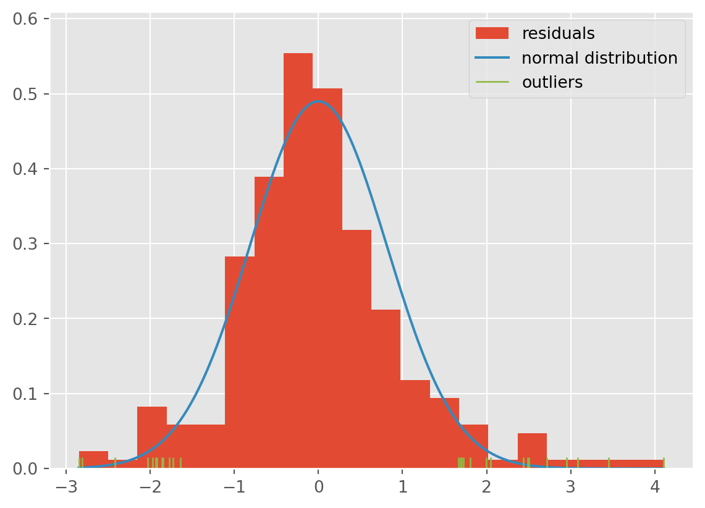
In this case, the tails seem to be a little heavier than what we would expect to see under the normal distribution. You can tell from the amount of green points in the rug plot, as well as the bars rising above the tails.
12.2.2 QQPlot
Another way to check normality is with a qq-plot. A qq-plot compares the quantiles of the sample to the quantiles of the theoretical normal distribution. The x-axis represents the theoretical quantiles. The y-axis represents the sample quantiles. If the sample follows a normal distribution, the points in the qq-plot will approximately lie on a line.
Note
We expect to see the points deviate from the line \(y=x\) at the ends of the line, even if the data are normal.
Interpretation:
- Straight Line: If the points lie on or near the straight line, the sample appears normal.
- Heavy Tails: Points deviating upwards or downwards at the ends suggest the sample has heavier or lighter tails than the normal distribution.
- S-Shape: Points forming an S-shape indicate the sample has lighter tails and a heavier center than the normal distribution.
Example:
sm.qqplot(lm3.resid, line="s");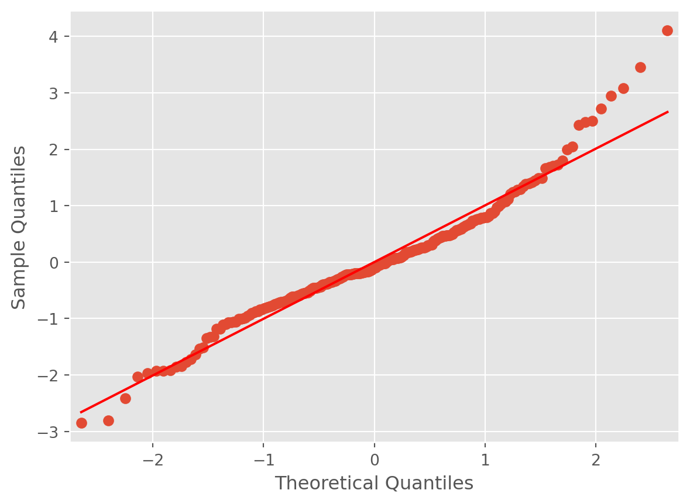
For instance, the points have a slight S, indicating a slight skew. The direction of the S indicates a right skew. This means that there is more of a propensity for the tips to be unexpectedly higher than lower. This makes sense intuitively, as tips have a lower bound but no upper bound.
Nevertheless, the S is not super pronounced, and so we can conclude it is not too problematic.
12.3 Heteroscedasticity
Another troublesome situation that can be detected using residual analysis is heteroscedasticity, which means that the residuals have small variance for in some subsets of the data, and high variance in others. The opposite of heteroscedasticity is homoscedasticity, which is what we want to see in the data, and means that the residuals have similar variance across all subsets of the data.
12.3.1 Plotting the residuals against the fitted values
To check this assumption, we can use some other diagnostic plots. One plot is that of the fitted values \(\hat Y\) (\(x\)-axis) against the residuals \(\hat\epsilon\) (\(y\)-axis). If the error depends on \(\hat y\), then the identically distributed assumption on the errors is probably not valid. If the assumptions are valid, we should observe on the plots that at all levels of the response, the mean of the residuals is 0 and the variance remains the same. Thus, we should see a horizontal band centered at 0 containing the observations.
Example:
plt.scatter(fv,res);
plt.ylim(-4,4)
plt.axhline(0)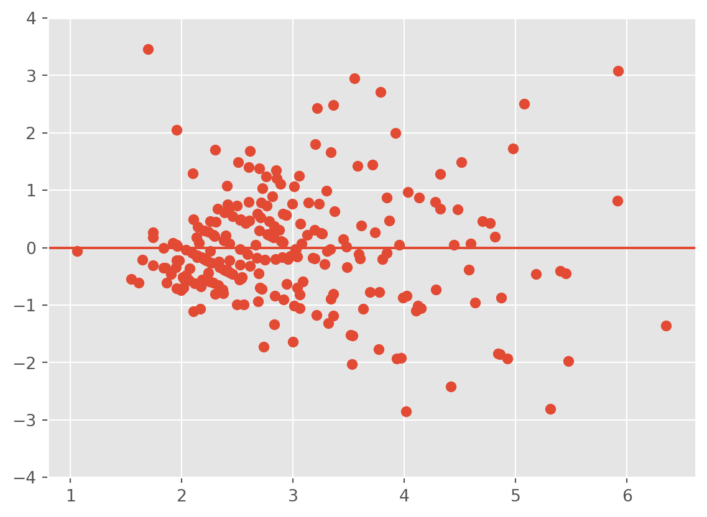
Observe that as the tip amount increases, so does the variance. That is, the points form a fan. This is a strong indication of heteroscedasticity. We should apply a transformation to resolve the issue.
Be VERY careful about the scale of your plot, as it can affect your interpretation. Zooming out or in too much can make everything look fine. In addition, the \(y\)-axis not being centered at 0 can cause you to misinterpret the plot.
12.3.2 Plotting the residuals against the covariates
Plotting the residuals against the covariates can reveal dependence between the errors. For instance, if time is a covariate, you can plot the residuals over time to see if they have any relationship with time. If there appears to be dependence among the residuals, then the assumptions of the model are violated. That is, in these plots we should also see a horizontal band centered at 0 containing the observations. If not, then the residuals have a relationship with the given covariate.
Example:
plt.scatter(tips['total_bill'] ,res);
plt.ylim(-4,4)
plt.axhline(0)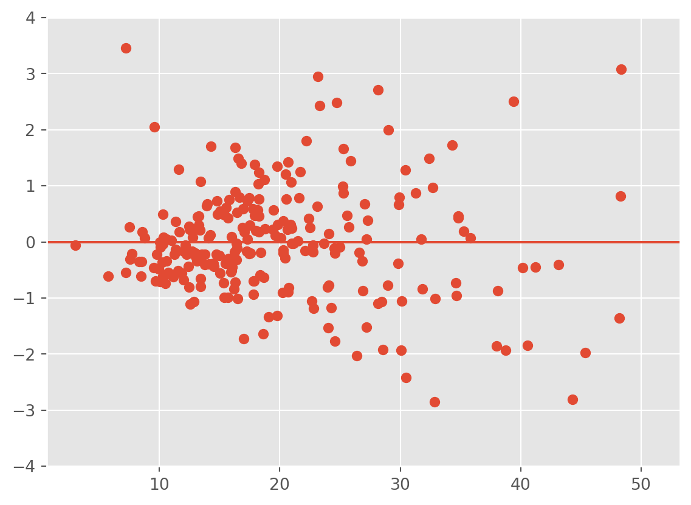
Here, the we observe that the variance of the residuals is related to the total bill.
12.3.3 Plotting the fitted values against the response
Another plot is that of the fitted values against the observed response \(Y\). This gives an idea of the overall fit of the model. We should observe the points scatters around the line \(y=x\).
plt.scatter(tips['tip'] ,fv);
plt.axline((0, 0), slope=1, color='blue', label='y = x')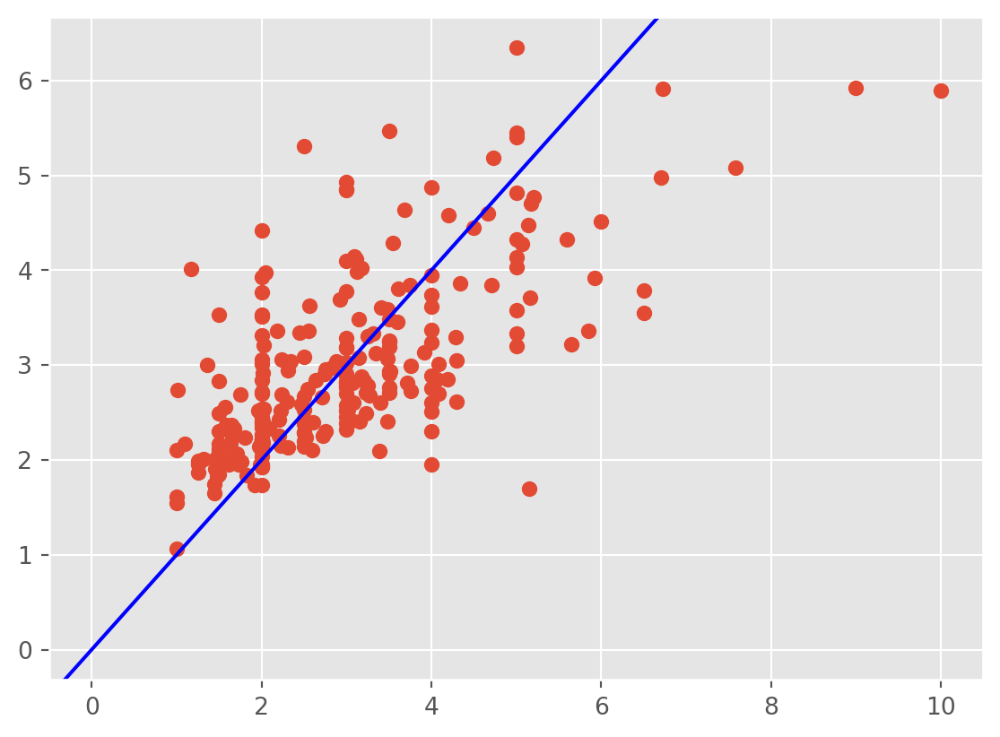
We observe that the regression line underestimates the tips at small values and overestimates them at high values. The model fits only moderately well. In this case, handling the large observations and heteroscedasticity should help.
12.4 Transformations
When there is heteroskedasticity or issues with the plot of the fitted values against the response, we should apply a transformation to the model to correct this. The transformation should be guided by domain knowledge where possible. More advanced methods to choose transformations are outside of the scope of how to correctly apply transfomations is too wide for this course. However, it is common to try the square root and log transformations of the response. So for now, you can try each of those. You can also transform the regressors if you suspect that the response has a linear relationship with a transformation of the regressors. For instance, you might try:
# Let's see what these look like
plt.scatter(np.log(tips['tip']) ,tips['total_bill'])
plt.show()
plt.scatter(np.sqrt(tips['tip']) ,tips['total_bill'])
plt.show()
plt.scatter(tips['tip'] ,tips['total_bill'])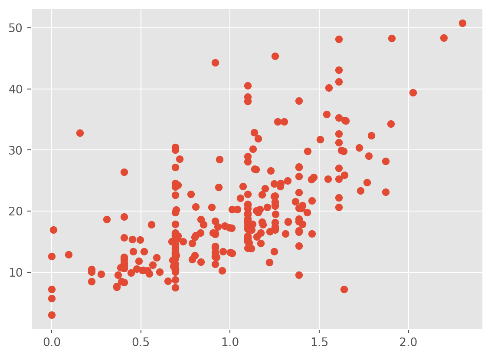
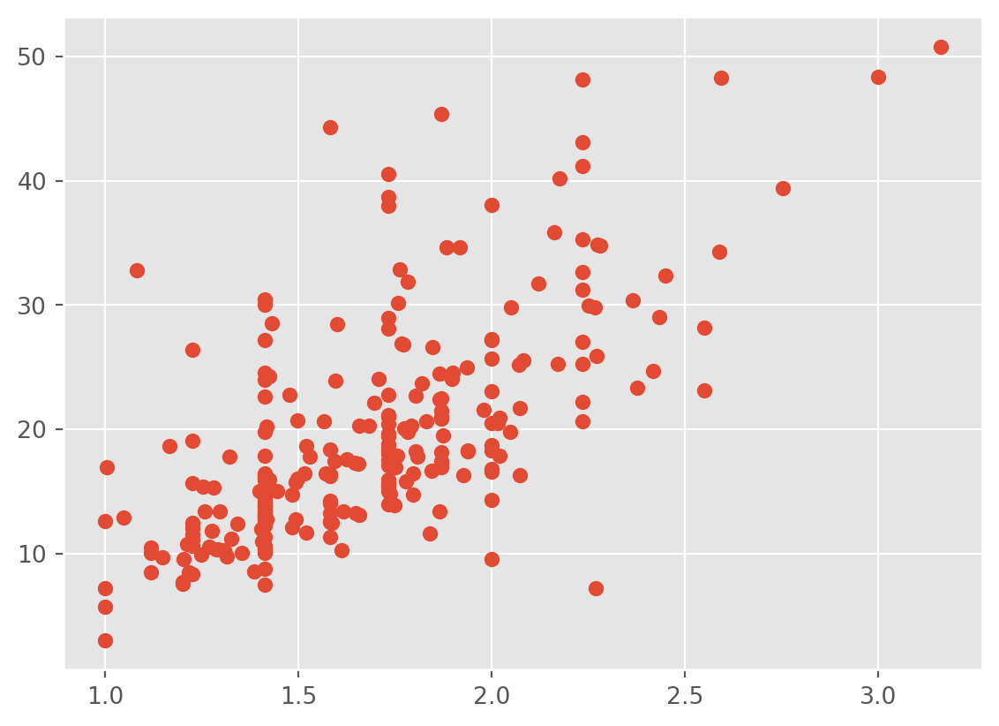
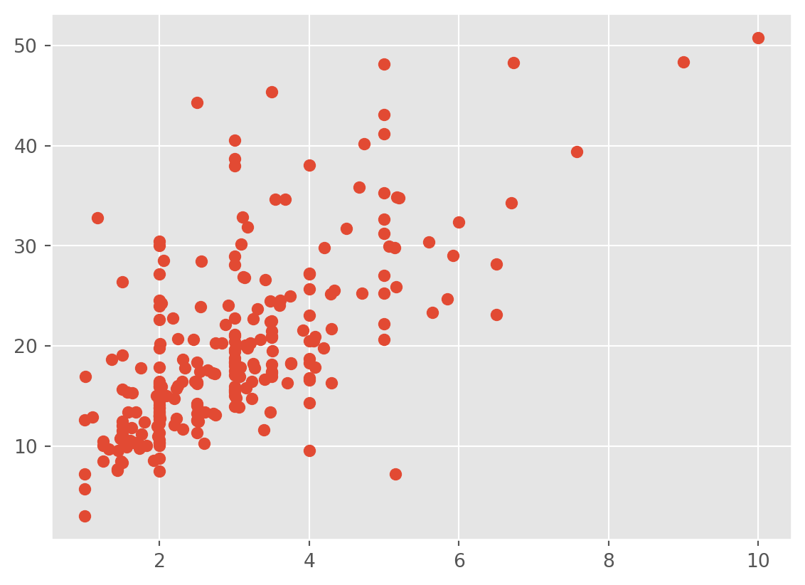
model3= 'np.sqrt(tip)~total_bill+sex+smoker+day+time+size'
lm3 = smf.ols(formula = model3, data = tips).fit()
print(lm3.summary())
plt.scatter(np.sqrt(tips['tip']) ,lm3.fittedvalues);
plt.axline((1, 1), slope=1, color='blue', label='y = x')
plt.show()
##
plt.scatter(lm3.fittedvalues ,lm3.resid);
plt.ylim(-1,1)
plt.axhline(0)
plt.show() OLS Regression Results
==============================================================================
Dep. Variable: np.sqrt(tip) R-squared: 0.467
Model: OLS Adj. R-squared: 0.448
Method: Least Squares F-statistic: 25.70
Date: Mon, 22 Jul 2024 Prob (F-statistic): 2.50e-28
Time: 14:16:35 Log-Likelihood: -29.902
No. Observations: 244 AIC: 77.80
Df Residuals: 235 BIC: 109.3
Df Model: 8
Covariance Type: nonrobust
==================================================================================
coef std err t P>|t| [0.025 0.975]
----------------------------------------------------------------------------------
Intercept 1.0386 0.070 14.920 0.000 0.901 1.176
sex[T.Female] 0.0139 0.039 0.362 0.718 -0.062 0.090
smoker[T.No] 0.0188 0.040 0.470 0.639 -0.060 0.097
day[T.Fri] 0.0437 0.107 0.408 0.684 -0.167 0.255
day[T.Sat] -0.0059 0.128 -0.046 0.963 -0.258 0.246
day[T.Sun] 0.0432 0.128 0.337 0.737 -0.210 0.296
time[T.Dinner] -0.0102 0.121 -0.084 0.933 -0.249 0.228
total_bill 0.0252 0.003 9.638 0.000 0.020 0.030
size 0.0505 0.024 2.072 0.039 0.002 0.098
==============================================================================
Omnibus: 3.509 Durbin-Watson: 2.060
Prob(Omnibus): 0.173 Jarque-Bera (JB): 3.735
Skew: 0.122 Prob(JB): 0.154
Kurtosis: 3.555 Cond. No. 281.
==============================================================================
Notes:
[1] Standard Errors assume that the covariance matrix of the errors is correctly specified.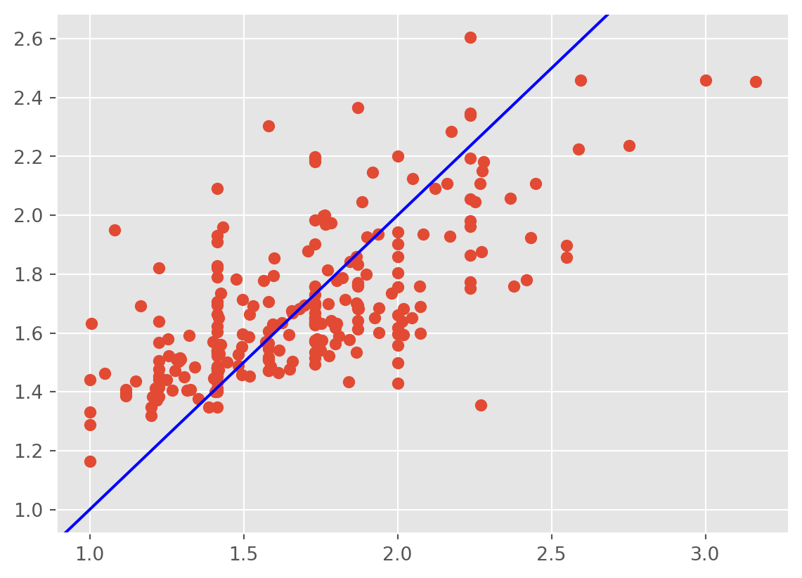
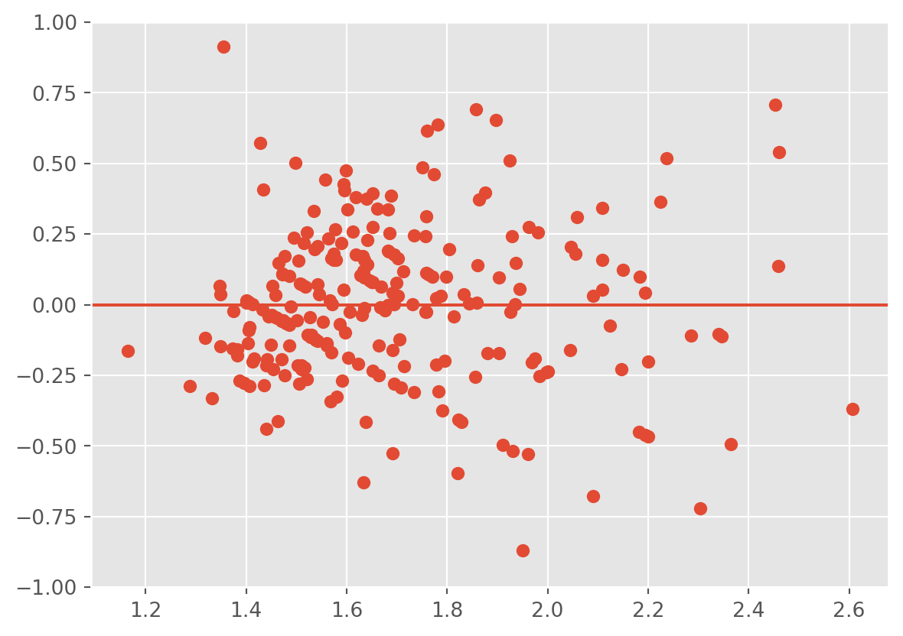
The heteroscedasticity is improved, however, the fitted values don’t line up well with the response.
We can also try the log transform:
model3= 'np.log(tip)~total_bill+sex+smoker+day+time+size'
lm3 = smf.ols(formula = model3, data = tips).fit()
print(lm3.summary())
plt.scatter(np.log(tips['tip']) ,lm3.fittedvalues);
plt.axline((1, 1), slope=1, color='blue', label='y = x')
plt.show()
plt.scatter(lm3.fittedvalues ,lm3.resid);
plt.ylim(-1,1)
plt.axhline(0)
plt.show() OLS Regression Results
==============================================================================
Dep. Variable: np.log(tip) R-squared: 0.444
Model: OLS Adj. R-squared: 0.425
Method: Least Squares F-statistic: 23.47
Date: Mon, 22 Jul 2024 Prob (F-statistic): 2.80e-26
Time: 14:16:35 Log-Likelihood: -71.628
No. Observations: 244 AIC: 161.3
Df Residuals: 235 BIC: 192.7
Df Model: 8
Covariance Type: nonrobust
==================================================================================
coef std err t P>|t| [0.025 0.975]
----------------------------------------------------------------------------------
Intercept 0.2668 0.083 3.230 0.001 0.104 0.430
sex[T.Female] 0.0181 0.046 0.396 0.693 -0.072 0.108
smoker[T.No] 0.0180 0.047 0.380 0.704 -0.075 0.111
day[T.Fri] 0.0532 0.127 0.419 0.676 -0.197 0.303
day[T.Sat] -0.0155 0.152 -0.102 0.919 -0.315 0.284
day[T.Sun] 0.0629 0.152 0.413 0.680 -0.237 0.363
time[T.Dinner] -0.0139 0.144 -0.097 0.923 -0.297 0.269
total_bill 0.0283 0.003 9.140 0.000 0.022 0.034
size 0.0581 0.029 2.011 0.045 0.001 0.115
==============================================================================
Omnibus: 4.024 Durbin-Watson: 2.012
Prob(Omnibus): 0.134 Jarque-Bera (JB): 3.685
Skew: -0.251 Prob(JB): 0.158
Kurtosis: 3.332 Cond. No. 281.
==============================================================================
Notes:
[1] Standard Errors assume that the covariance matrix of the errors is correctly specified.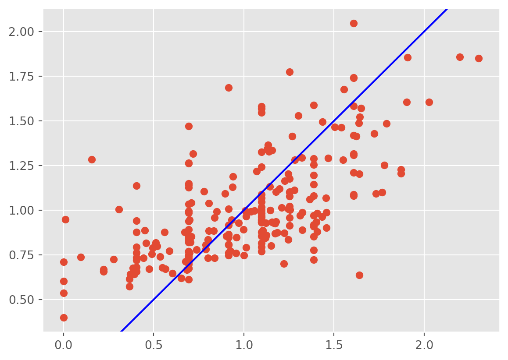
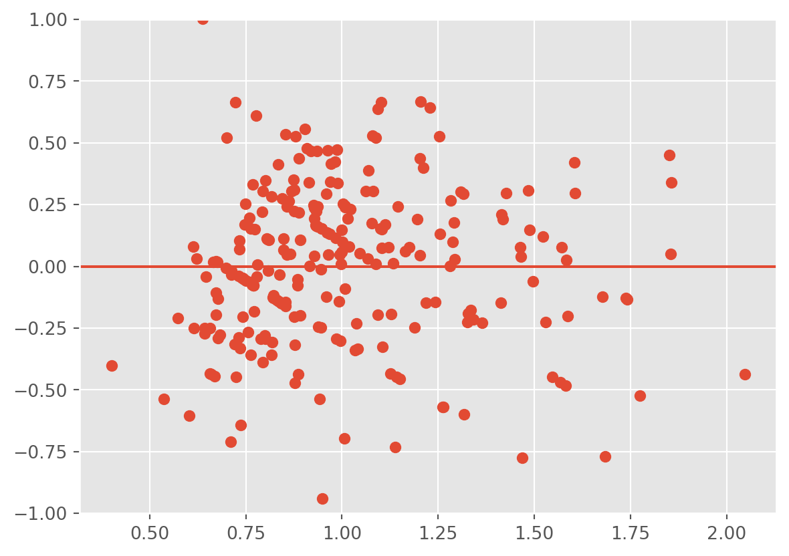
The heteroscedasticity is improved, however, the fitted values don’t line up well with the response and the residuals are biased downwards.
Now, we can also try transformating both variables:
# Let's see what these look like
plt.scatter(np.log(tips['tip']) ,np.log(tips['total_bill']))
plt.show()
plt.scatter(np.sqrt(tips['tip']) ,np.sqrt(tips['total_bill']))
plt.show()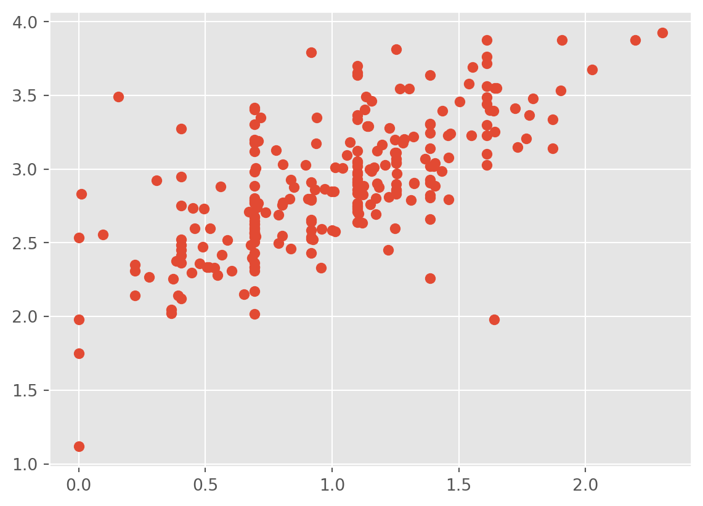
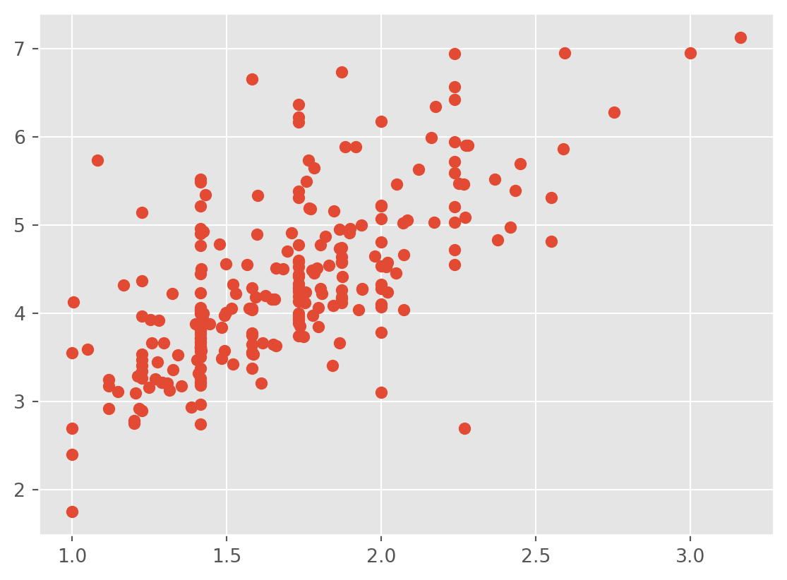
model3= 'np.sqrt(tip)~np.sqrt(total_bill)+sex+smoker+day+time+size'
lm3 = smf.ols(formula = model3, data = tips).fit()
print(lm3.summary())
plt.scatter(np.sqrt(tips['tip']) ,lm3.fittedvalues);
plt.axline((1, 1), slope=1, color='blue', label='y = x')
plt.show()
plt.scatter(lm3.fittedvalues , lm3.resid);
plt.ylim(-1,1)
plt.axhline(0)
plt.show() OLS Regression Results
==============================================================================
Dep. Variable: np.sqrt(tip) R-squared: 0.477
Model: OLS Adj. R-squared: 0.459
Method: Least Squares F-statistic: 26.75
Date: Mon, 22 Jul 2024 Prob (F-statistic): 2.90e-29
Time: 14:16:35 Log-Likelihood: -27.601
No. Observations: 244 AIC: 73.20
Df Residuals: 235 BIC: 104.7
Df Model: 8
Covariance Type: nonrobust
=======================================================================================
coef std err t P>|t| [0.025 0.975]
---------------------------------------------------------------------------------------
Intercept 0.5037 0.097 5.179 0.000 0.312 0.695
sex[T.Female] 0.0165 0.038 0.431 0.667 -0.059 0.092
smoker[T.No] 0.0158 0.039 0.400 0.690 -0.062 0.093
day[T.Fri] 0.0529 0.106 0.499 0.618 -0.156 0.262
day[T.Sat] 0.0032 0.127 0.025 0.980 -0.247 0.253
day[T.Sun] 0.0494 0.127 0.388 0.698 -0.201 0.300
time[T.Dinner] -0.0212 0.120 -0.177 0.860 -0.258 0.215
np.sqrt(total_bill) 0.2406 0.024 9.957 0.000 0.193 0.288
size 0.0468 0.024 1.939 0.054 -0.001 0.094
==============================================================================
Omnibus: 7.867 Durbin-Watson: 2.023
Prob(Omnibus): 0.020 Jarque-Bera (JB): 11.345
Skew: 0.194 Prob(JB): 0.00344
Kurtosis: 3.982 Cond. No. 69.5
==============================================================================
Notes:
[1] Standard Errors assume that the covariance matrix of the errors is correctly specified.
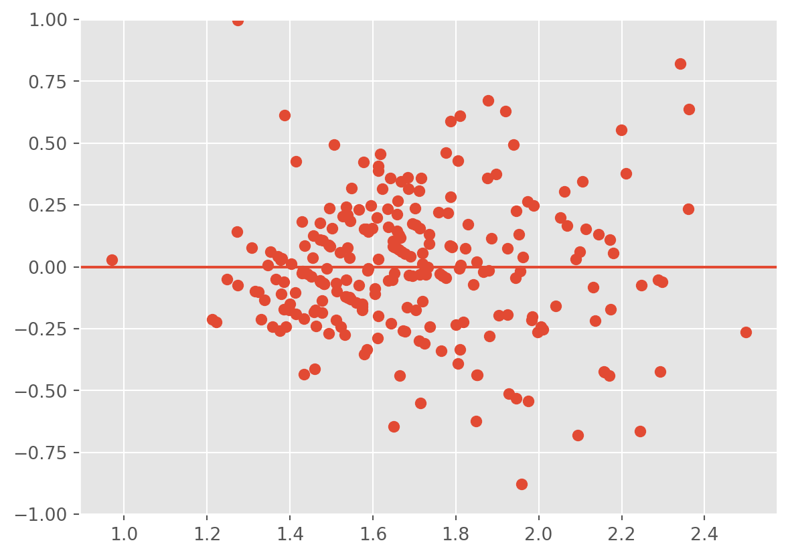
model3= 'np.log(tip)~np.log(total_bill)+sex+smoker+day+time+size'
lm3 = smf.ols(formula = model3, data = tips).fit()
print(lm3.summary())
plt.scatter(np.log(tips['tip']) ,lm3.fittedvalues);
plt.axline((1, 1), slope=1, color='blue', label='y = x')
plt.show()
plt.scatter(lm3.fittedvalues ,lm3.resid);
plt.ylim(-1,1)
plt.axhline(0)
plt.show() OLS Regression Results
==============================================================================
Dep. Variable: np.log(tip) R-squared: 0.478
Model: OLS Adj. R-squared: 0.460
Method: Least Squares F-statistic: 26.90
Date: Mon, 22 Jul 2024 Prob (F-statistic): 2.14e-29
Time: 14:16:35 Log-Likelihood: -63.952
No. Observations: 244 AIC: 145.9
Df Residuals: 235 BIC: 177.4
Df Model: 8
Covariance Type: nonrobust
======================================================================================
coef std err t P>|t| [0.025 0.975]
--------------------------------------------------------------------------------------
Intercept -0.9227 0.156 -5.922 0.000 -1.230 -0.616
sex[T.Female] 0.0253 0.044 0.570 0.569 -0.062 0.113
smoker[T.No] 0.0075 0.046 0.165 0.869 -0.082 0.097
day[T.Fri] 0.0704 0.123 0.571 0.568 -0.172 0.313
day[T.Sat] 1.36e-05 0.147 9.23e-05 1.000 -0.290 0.290
day[T.Sun] 0.0719 0.148 0.487 0.626 -0.219 0.363
time[T.Dinner] -0.0317 0.139 -0.228 0.820 -0.306 0.242
np.log(total_bill) 0.6135 0.060 10.209 0.000 0.495 0.732
size 0.0520 0.028 1.882 0.061 -0.002 0.106
==============================================================================
Omnibus: 8.916 Durbin-Watson: 1.943
Prob(Omnibus): 0.012 Jarque-Bera (JB): 14.268
Skew: -0.184 Prob(JB): 0.000797
Kurtosis: 4.126 Cond. No. 54.8
==============================================================================
Notes:
[1] Standard Errors assume that the covariance matrix of the errors is correctly specified.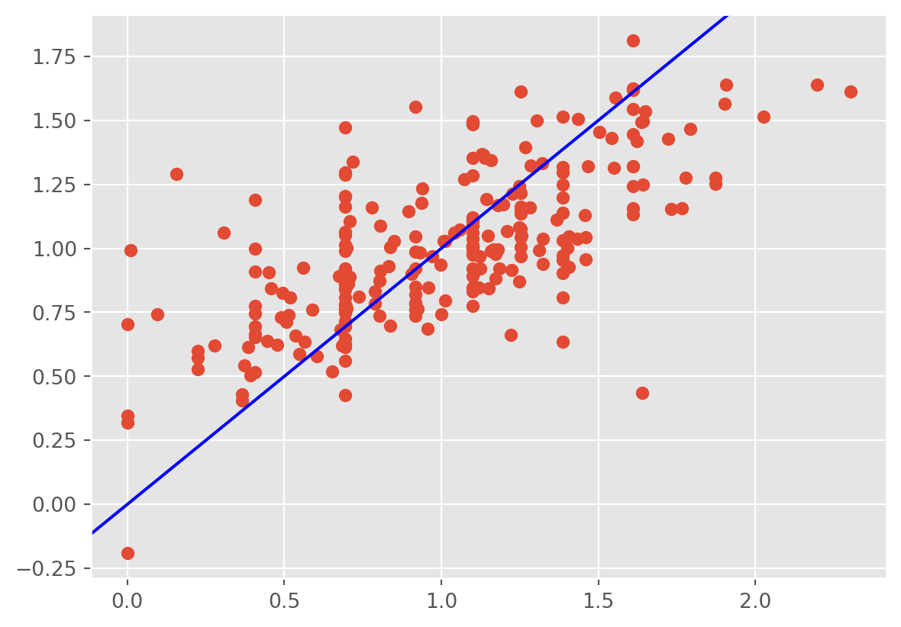
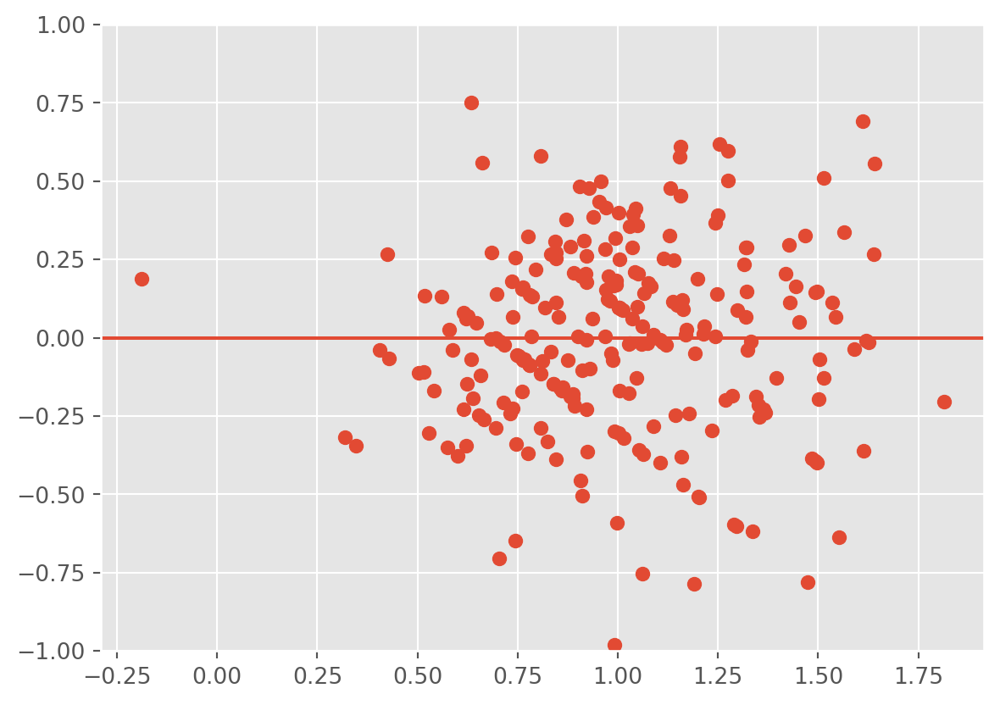
This fit is not bad!
12.5 Handling outliers
Outliers can destabilize a model and significantly reduce their predictive ability despite only representing a fringe subset of the overall data. The starting point should always be to inspect the initial raw data for any data points with unusually small or large values for certain features, and understand why they are different. If there is something clearly wrong with those data (like a misplaced decimal point), or if the reason for these small or large values can be effectively explained via an external factor that is not captured by the data itself, then this justifies removing them. Otherwise, it is best to keep these data points in mind throughout the modeling process, and deal with them during the modeling process itself. If the tail of the residuals is unusually large, one can try a robust regression procedure.
12.6 More on the linear regression output
We have not discussed some of the additional metrics in the output of the linear regression model. Let’s print the summary:
model3= 'np.log(tip)~np.log(total_bill)+sex+smoker+day+time+size'
lm3 = smf.ols(formula = model3, data = tips).fit()
print(lm3.summary()) OLS Regression Results
==============================================================================
Dep. Variable: np.log(tip) R-squared: 0.478
Model: OLS Adj. R-squared: 0.460
Method: Least Squares F-statistic: 26.90
Date: Mon, 22 Jul 2024 Prob (F-statistic): 2.14e-29
Time: 14:16:35 Log-Likelihood: -63.952
No. Observations: 244 AIC: 145.9
Df Residuals: 235 BIC: 177.4
Df Model: 8
Covariance Type: nonrobust
======================================================================================
coef std err t P>|t| [0.025 0.975]
--------------------------------------------------------------------------------------
Intercept -0.9227 0.156 -5.922 0.000 -1.230 -0.616
sex[T.Female] 0.0253 0.044 0.570 0.569 -0.062 0.113
smoker[T.No] 0.0075 0.046 0.165 0.869 -0.082 0.097
day[T.Fri] 0.0704 0.123 0.571 0.568 -0.172 0.313
day[T.Sat] 1.36e-05 0.147 9.23e-05 1.000 -0.290 0.290
day[T.Sun] 0.0719 0.148 0.487 0.626 -0.219 0.363
time[T.Dinner] -0.0317 0.139 -0.228 0.820 -0.306 0.242
np.log(total_bill) 0.6135 0.060 10.209 0.000 0.495 0.732
size 0.0520 0.028 1.882 0.061 -0.002 0.106
==============================================================================
Omnibus: 8.916 Durbin-Watson: 1.943
Prob(Omnibus): 0.012 Jarque-Bera (JB): 14.268
Skew: -0.184 Prob(JB): 0.000797
Kurtosis: 4.126 Cond. No. 54.8
==============================================================================
Notes:
[1] Standard Errors assume that the covariance matrix of the errors is correctly specified.12.6.1 Skewness and kurtosis
First, we have that the std error lists the standard errors for the estimated coefficients. We expect the true population values of the coefficients to fall within 2 std errors of the estimated coefficients with high confidence. Next, Skew indicates how skewed the residuals are. Values departing from 0 indicate high skewness.Kurtosis is a measure of the tails of the residuals. Values higher than 3 indicate tails that are heavier than the normal distribution. Alternate models should be considered in thsi case.
12.6.2 Multicollinearity
A serious problem that may dramatically impact the usefulness of a regression model is multicollinearity, or near - linear dependence among the regression variables. Multicollinearity implies near - linear dependence among the regressors. We can check for this dependence with the condition number, written as Cond. No.. Condition numbers between 100 and 1000 imply moderate to strong multicollinearity, and if the condition number exceeds 1000, severe multicollinearity is indicated.
Multicollinearity can be cured with:
- more data (lol often not possible), 2, model re-specification: Can you include a function of the variables that preserves the information, but aren’t linearly dependent? Can you remove a variable?
- Or, a modified version of regression, one of Lasso, ridge or elastic net regression.